I’m an international student in MIT's class of 2021 pursuing a Bachelors in Mechanical Engineering.
I am comfortable with a variety of mechanical engineering tools such as 3D printing, manual and CNC machining,
injection molding and thermoforming. I also have experience with a variety of software tools
such as Python, MATLAB, C/C++, Fusion 360, Autodesk CFD, Autodesk MoldFlow and Siemens Tecnomatix.
Outside of class, I have been a part of a variety of research groups
in the areas of robotics, nanoengineering, metallurgy and business. I've also been a lab assistant for an
electromechanical systems class for nearly two years.
I am a hobbyist who likes to take apart and tinker with everyday items before improving and rebuilding them.
During my free time, I enjoy riding my homemade electric motorcycle around Boston, flying FPV drones
and exploring patches of nature wherever they may exist.
Developing a 1DOF haptic feedback controller to interface with an Atomic
Force Microscope to allows users to feel attractive and repulsive force that occur
on the nano scale.
Conducted extensive literature review on haptics, learning and human design
to optimize feedback controller design
Corresponding with AFM manufacturer to modify microscope software to
accept analog signals for control and output feedback signals
Automation System Developer
MIT Micro/Nano Lab (June 2020 - September 2020)
Enhanced remote learning during pandemic for over 50 students by modifying a compound
light microscope to controlled and viewable through the internet
Increased motion precision by three orders of magnitude to achieve micrometer-level
precision which allows users to conduct Z-height scans without additional hardware
Improved user experience by implementing photo/video recording features and a
GUI for a live coordinate readout
Robotic Systems Researcher
MIT d'Arbeloff Lab (January 2020 - March 2020)
Developed small, 3D printed robotic legs to test novel control algorithms for viability
before scaling it up to full-sized robotic legs.
Cut down prototype time by 30% by providing MATLAB script that visualizes robotic
limb workspace and torque requirements for a given leg geometry
Developed a hybrid force/position control walking algorithm by interfacing MATLAB
code that defines Bezier trajectories and control parameters with C++ code that runs a control loop
Mechanical Engineer
TILT (January 2020 - Present)
Designed a low-cost modular wheelchair attachment that allow users to traverse staircases
Analyzed data to improve design criteria from alpha prototype user tests
conducted with over 20 wheelchair users in India
Iterated design using DFM and DFA criteria to decrease manufacturing stock waste and
reduce assembly time from two hours to twenty minutes
Innovation and Performance Intern
Keolis Commuter Services (June 2019 - September 2019)
Coordinated and led an interdisciplinary team to conduct locomotive engine testing
Reduced maintenance time by 15% by resolving pump malfunction through root cause failure analysis
Saved over $30,000 annually by integrating an oil filter cleaning system into maintenance schedule
Reduced headlight redesign project timeline by 6 months from data obtained through CFD simulations
Designed 3D models of locomotives from engineering drawings for future modifications and simulations
Education
Massachusetts Institute of Technology
Bachelors Degree - 2017 - 2021
Major: Mechanical Engineering
Focus: Electromechanical, Robotic and Control Systems
Concentration: Music Technology
Relevant Coursework: Mechanics and Materials, Dynamics and Controls, Thermal-Fluids Engineering
Robotic Systems, Bio-Inspired Robotics, Numerical Computation for Mechanical Engineers,
Instrument and Measurement, Design and Manufacturing, Product Design,
Mechanical Engineering Tools, Fundamentals of Programming, Signals and Systems,
Electronics for Mechanical Engineers
Gateway College Sri Lanka
High School - 2013 - 2017
Focus: Science and Technology
Role: Deputy Head Prefect
Awards and Clubs: Monash University Future Leader Award,
Fulbright Scholar Program, Head of Community Service Club, Edexcel High Achiever
Award, SLMUN 2014 Organizer
Projects
×
Sensus
In this class, I and 16 other students work together as a product development firm throughout the semester.
We start by selecting an idea and then running it through different phases such as high-level physical modelling,
detailed CAD design review and final manufacturable product.
We decided to make a medical device that automates testing for peripheral neuropathy in users feet by mimicking
the Semmes-Weinstein test where a doctor would touch the patients foot at different locations with a thin wire
filament and asks them if they felt the touch.
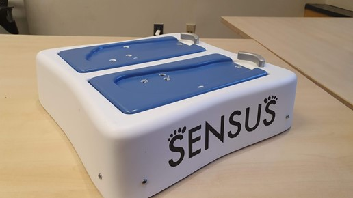
The final product. The thermoformed blue inserts are removable so that different ones can be used for people
with different foot sizes. This is so that the main housing can be manufactured without changes to tooling.
The aluminum heel liners are used as a guide for the user to place their feet. They also act as a capacitive touch
sensor to tell the server that the user has placed their feet on the device
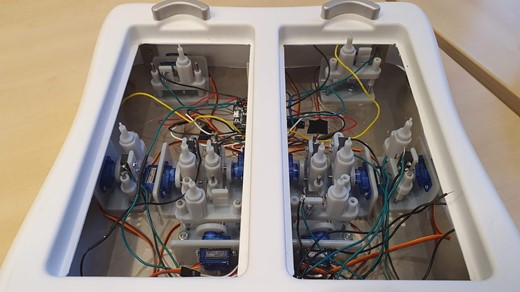
A look at the internal housing and mechanisms
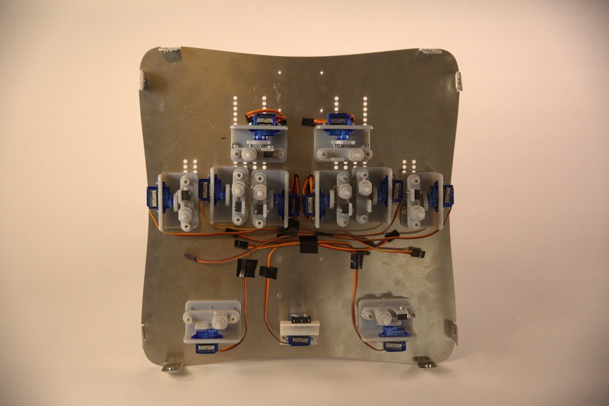
The stainless steel baseplate of the device without the thermoformed housing.
There are multiple hole cutouts so that the mechanisms could be adjusted to accomodate various foot sizes
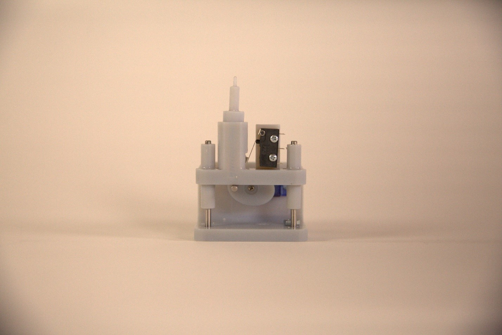
The actuator mechanism that consists of a servo which moves a platform up that contains the filament which
touches the users foot. When the filament touches the foot, a spring gets compressed which activates a switch that tells
the device that the filament did indeed touch the foot.
The device has four main components:
Hardware: This is the main device which conducts the test. The hardware has 11 stepper motors for actuation,
10 limit switches for confirming that the filament contacted the foot and two capacitive touch sensors to
confirm that the users’ foot is on the device
Server: The server stores the user’s information and test data to keep track of whether the user is
experiencing nerve degradation. The server is also the medium for communication between the electronics and the app.
App: The smartphone app is the user’s main way of conducting tests. Once the user’s feet are on the
device, the app allows the user to start the test and once the filament touches the users foot, the app
asks them if they felt it. The app communicates with the server via get requests.
Electronics: The brain of the hardware is an ESP32 which actuates the motors and relays sensor information
to the server through get requests. (This is the section that I took ownership of)
Throughout the project, I took ownership of everything to do with electronics. This includes writing Arduino
code to actuate motors, store sensor information and communicate with the server. I also did all the wiring
for the electronics using a protoboard. I explored the option of fabricating a PCB but due to time constraints,
this was out of scope for the class.
To simplify wiring, I made two separate protoboard modules. One that has the ESP32 microcontroller and another
that distributes 5V and GND to 11 servos and 10 limit switches.
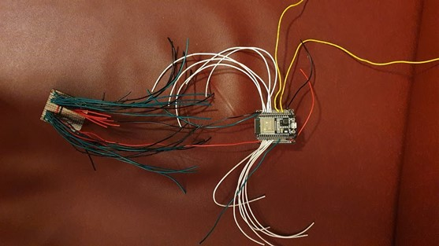
The electronics module where the board on the left is the power distribution circuit and the board on the
right consists of the microcontroller
ESP32 Circuit
White wires: The servo data cables through which a PWM signal is sent to control the servo position
Yellow wires: Wires that connect to a metal heel liner for capacitive touch sensing
Red and Black wires: Connects to an external power supply to supply 5V and GND to the ESP32 and sends
it to the power distribution board
Green wire: A wire that transfers the signals of the 10 limit switches to a single GPIO pin to
emulate an OR gate with 10 inputs.
The wire is connected to the ESP32 with an internal pull up resistor to get a digital HIGH/LOW signal input.
Power Distribution Circuit
Red wires: Sends 5V to the power input of the servo cable
Black wires: The GND cable for the servos and connects to one end of the limit switch
Green wires: Connects to the other end of the limit switch which sends a 5V signal when the switch
contacts are closed
The code on the ESP32 runs through a state machine which checks to see if the user’s feet are on the device and
the user has told the app to start a test before actuating the motors and receiving feedback from the limit switches.
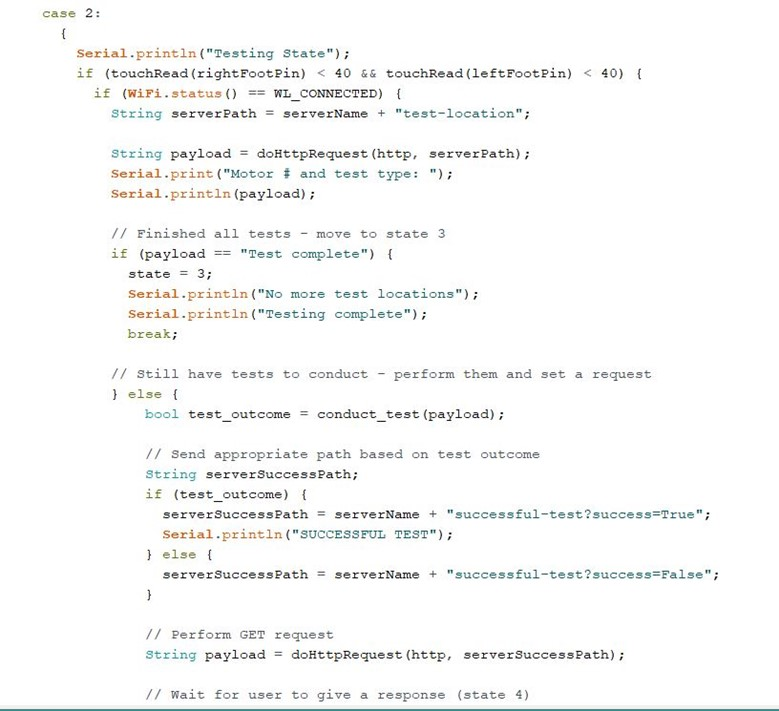
×
Microscope Automation and Remote Access
MIT’s Micro/Nano Engineering Laboratory runs 3 classes where student extensively use compound light microscopes
to analyze experimental data. Due to restrictions caused by the COVID-19 pandemic, students were unable to have
lab access and conduct these experiments.
I took on the project of finding a solution that allows remote students to have a hands-on lab experience by
making the microscope controllable and viewable through the internet. I was also tasked with modifying air pressure
regulators to be remote controlled so that remote students can conduct microfluidic experiments.
This project was run on a tight 1.5-month timeline and I only had access to a 3D printer and a caliper as engineering tools.
Hardware
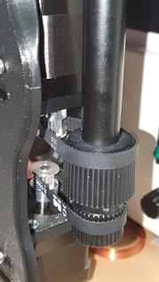
The X and Y axis was controlled with a combination of a belt drive and pulley system paired with NEMA17 stepper motors
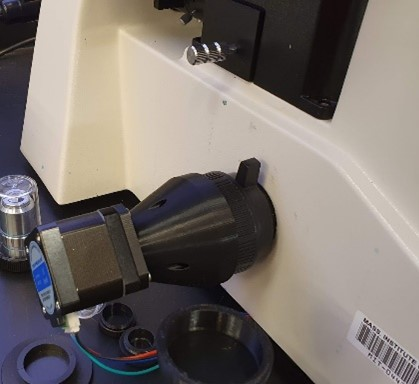
The focus stage was controlled with a minimally invasive, direct drive stepper motor meshed directly to
the focus stage fine tuning shaft
Software
I wrote 3 different scripts that run in parallel on a Raspberry Pi 4 to control the microscope.
A keyboard listener that takes the users keyboard inputs to move the microscope stage. The arrow keys
move the X/Y stage, and the W/S key moves the focus stage
A GUI which allows users to change how much the stages move and allows users to take photo/videos
A video feed that shows the microscope image and has a display overlay that tells users their Z height and
location on the slide
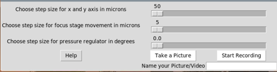
GUI with controls for controlling travel distance per click, picture/video recording and a help button
which lists out all the controls and features available in the software
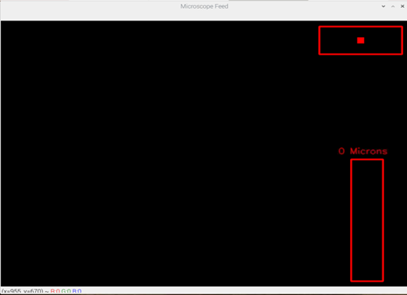
The red window on top right shows relative location on microscope slide. The bordered red square represents the
whole slide and the filled square represents the section of the slide that is currently viewed.
The red window on the bottom right represents how much travel is done on the Z axis. The window fills once the user
starts moving up and down to give them an intuitive understanding of their relative heights and a height readout is
available if they want to obtain accurate Z height measurements.
I introduced a coordinate system that allow users to control the X, Y and Z location with micrometer level precision
which opens new avenues for obtaining data such as conducting Z height scans. The stages have an auto-homing
feature where all three stages move to a zero position which allows users to easily change slides and have a consistent
numerical height reference when taking measurements.
Interfacing Hardware and Software
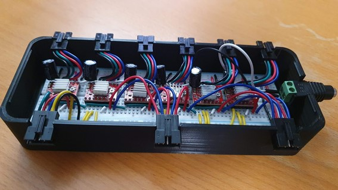
The 6 stepper motors (3 for microscope, 3 for pressure regulators) were connected to a breadboard enclosure which
contained the A4988 stepper drivers. The connectors on the bottom connected 15 wires to the raspberry pi which
were used to send signals to the stepper drivers. Each top connector connected to individual stepper motors to power them.
I also designed a custom enclosure which securely held the breadboard, connectors and power jack in place. The lid
has cutouts for thermal management and has features that allow it to lock onto to the enclosure with a snap fit.
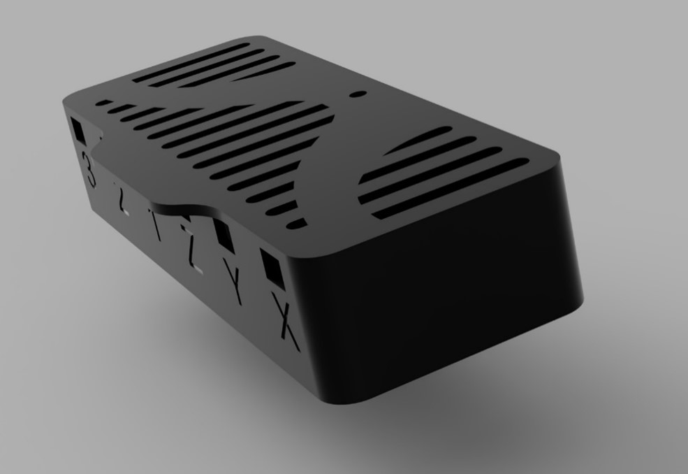
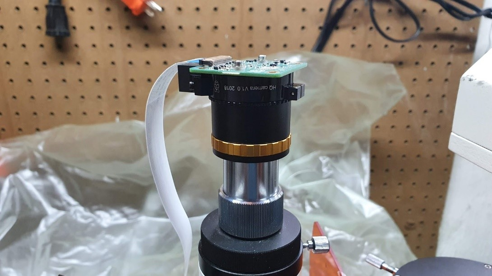
The Raspberry Pi was connected to a Sony IMX477 sensor which was connected to a microscope camera lens through a CS mount.
Below are some manuals I made on how to print, assemble and use the modified microscope.
The d’Arbeloff Lab at MIT developed Supernumerary Robotic Limbs
that attach to workers to improve their posture
when working in environments that can lead to permanent back problems in the long run. When users want to move
to a different position, they must carry or drag the limbs which weigh over 60lbs. They want to implement a walking
algorithm for the robot so it can walk with the user and not be an additional weight on them.
I developed small scale robotic limbs to safely test different walking algorithms since there is an inherent
safety risk of testing the robot with new code with a human in the middle of it. Once the optimal algorithm has been developed,
it would be scaled up to fit the full-sized robot. These tiny robotic are all 3D printable and weigh around 5lbs.
I wrote a MATLAB script that takes the leg lengths and robot mass to output the usable workspace and torque required.
Using this script, I decided on a usable leg geometry for the robot.
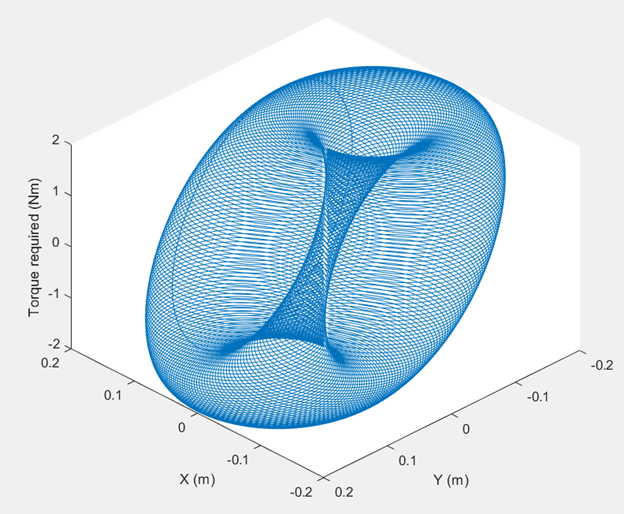
I decided on a symmetric 5 bar linkage to drive the legs since it allows for 2DOF motion while keeping the motor
mass in the body of the leg to minimize leg inertia and mimic the full-sized robot. The control loop is the main area
to be tested so the difference in kinematics would not affect the tests.
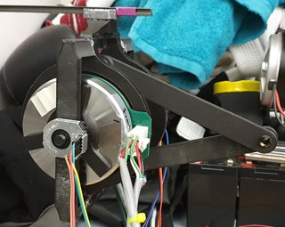
To run motion experiments, I wrote C++ code that runs on a Mbed HELIO microcontroller and transmits data in real
time to MATLAB through an ethernet connection. The control algorithm I wrote was a hybrid impedance/position control
feedforward algorithm that allows the robot to walk in a straight line. This is the code that researchers would
modify to test their control loop.
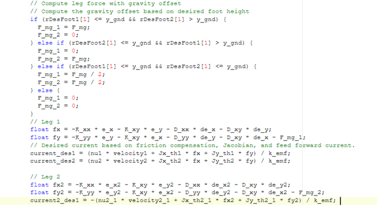
×
Oil Filter Cleaning Mechanism
The HSP46 locomotive has an oil filter that has 60 filter candles used for filtration. These candles are replaced
every three years due to gunk buildup which costs approximately $180,000 to replace them in the whole fleet.
I developed and integrated a cleaning mechanism into their maintenance schedule to increase the service life of the candle.
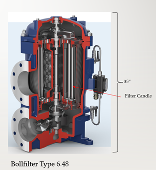
Oil filter for the locomotive engine
After looking at various cleaning methods, I chose a high-pressure cleaning cabinet (Ranger RD500D) used for
automotive parts cleaning as the cleaning mechanism since it would be the most cost and time efficient cleaning mechanism.
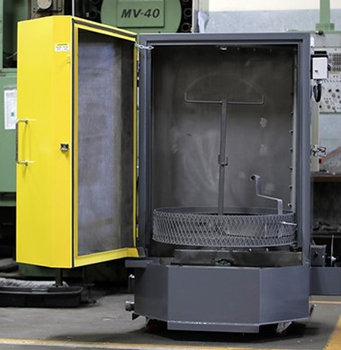
I designed and fabricated a filter candle holder to be placed inside the cabinet for cleaning. Each hole seen
in the acrylic plate holds a filter candle.
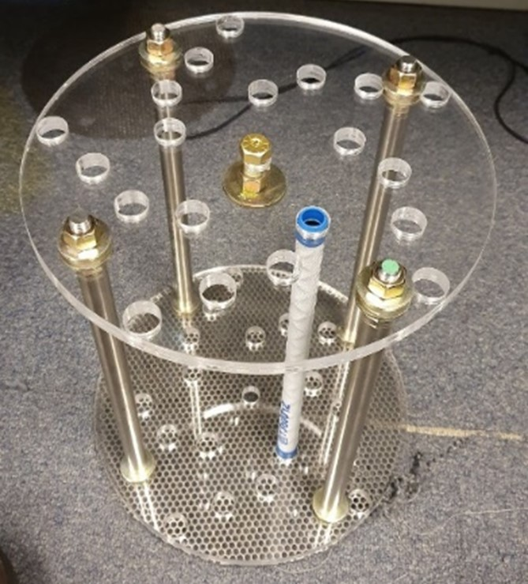
I optimized the hole pattern geometry to maximize the number of filter candles that would be sprayed down.
The hole pattern is based off the Fibonacci curve for optimal packing of candles.
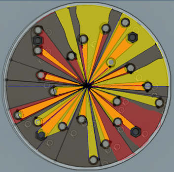
Simulation to see if all filter candles would receive water spray evenly.
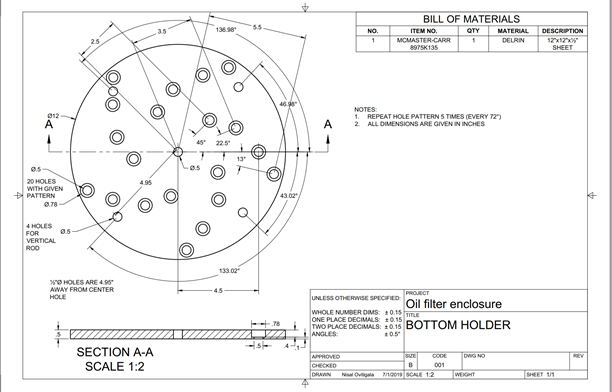
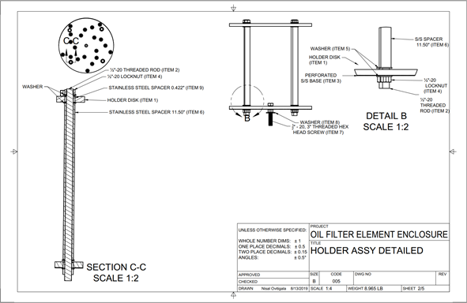
I conducted FEA simulations to see if the high-pressure water would bend the structure and cause the candles
to break. The simulation assumed that the water would apply a force of 50N from a 75PSI water jet. This information
was obtained from the flow rate data and has a safety factor of 3. Using the simulation results, I increased the
hole size by 1.4mm to account for bending of the structure.
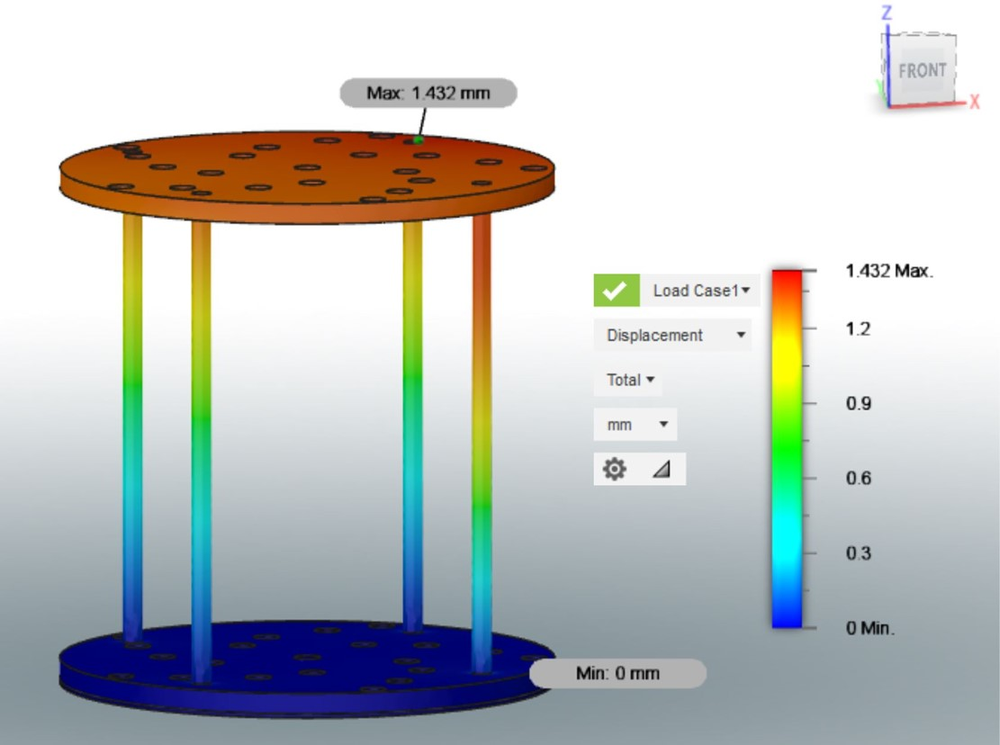
×
Headlight Redesign Project
The HSP46 locomotive has an engine exhaust outlet located on top of it which causes exhaust soot to deposit on
the headlight and reduce its effectiveness or sometimes block its light down to dangerous levels. I was tasked
with finding a remedy to the issue.
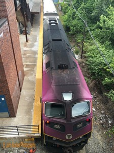
To start off, I designed an accurate CAD model that is to be used for CFD simulations. The
locomotives do not have any preexisting models, so I modelled it out of their engineering drawings.
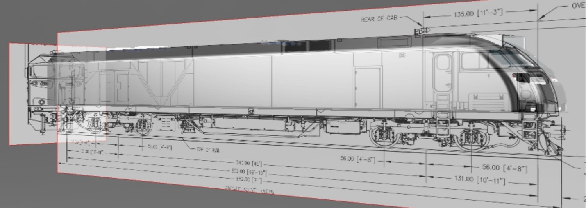
To verify the accuracy of the CAD, I ran a CFD simulation of the locomotive to see if I could recreate the
conditions for soot deposition. The simulation shows that there is a low velocity boundary layer of air flowing
over the surface of the locomotive which is where soot deposition would occur.
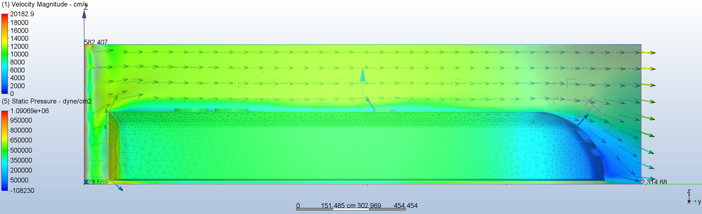
I designed a headlight cover and ran a CFD simulation to verify that the cover would get rid of soot deposition on the headlight.
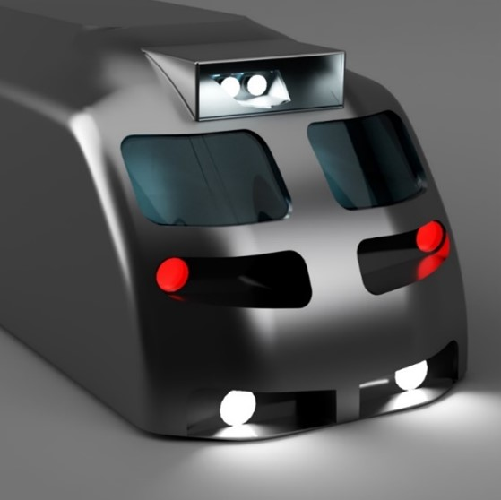
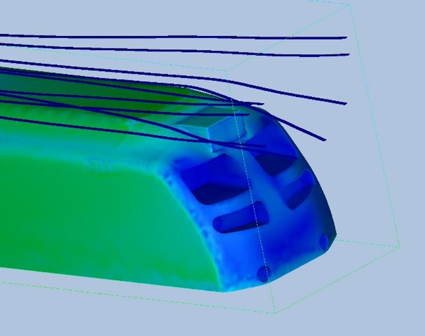
×
Oil System Failure Analysis
The HSP46 locomotive has a layover pump that keeps warm oil circulating through the engine during the winter.
It was experiencing an unexpected high-pressure spike that was causing the pump to regularly fail and put the
locomotive out of service. I conducted root cause failure testing and analysis to remedy the issue.
Procedure
Install pressure gauges through various points of oil system and conducting tests on the locomotive (Max.
rated pressure for the pump was 50PSIG, tests show pump experiencing pressures over 130PSIG)
Write a test report on the results obtained
Remedy the issue and conduct tests to verify solution success
To conduct these tests, I coordinated and lead a team of technicians which included an electrician to safely
shut off the pumps PLC, a plumber to install the check valve/ gauges and an engineer to start the train and load the engine.
Attached here is the full test report which has all the testing data and verification data.
This report was sent to the MBTA (Parent company) to implement this change on the whole fleet
×
Effects of Bicycle Tire Pressure on Transmitted Vibrations
I wrote a research paper on optimizing bicycle tire pressure for minimizing vibrations using scientific data
collection and statistical analysis methods.
I also conducted various lab experiments such as calibrating a laser interferometer and using
vibration analysis to obtain bode plots of different systems.
×
Arc Reactor Yoyo and Factory Simulation
I designed a yoyo with 5 other students. Since we didn’t have lab access for the second half of the semester
due to pandemic restrictions, we conducted injection molding analysis using AutoDesk MoldFlow and designed a
factory to produce a million Yoyos annually using Siemens Tecnomatix.
We also learned how to run and optimize CAM for machining molds for thermoforming and injection molding.
Below is a thermoforming mold that I made using a CNC mill. It has a hole that was made to press fit a pin
and has accurate dimensions down to 0.002” inches.
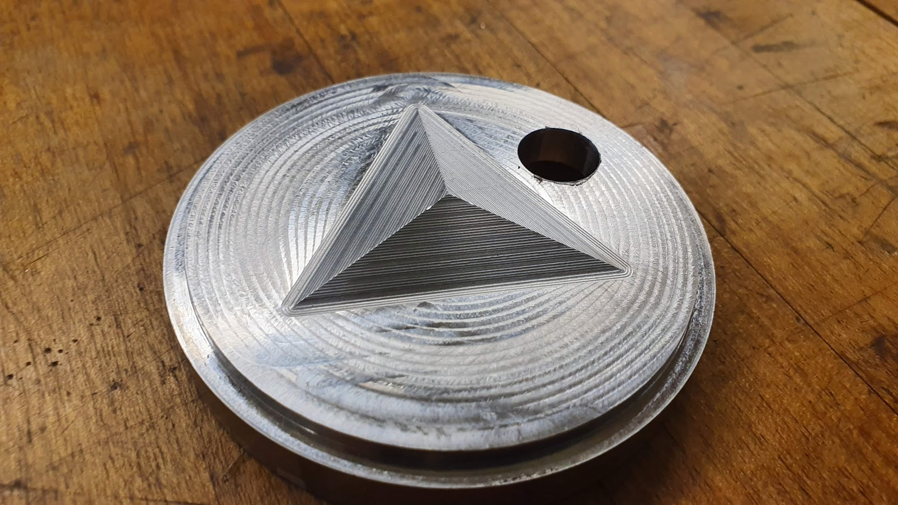
×
Assistive Tech. Wheelchair Attachment
Two of my classmates developed a wheelchair attachment that allow wheelchair users to traverse staircases. I
joined them on further developing the product to be fully functional and scalable. The project has a provisional patent and is being funded
by MIT Sandbox and the MIT PKG center with over $15,000.
Below is the first design of the wheelchair which was taken to India and user tested with over 20 wheelchair users
to iterate the design
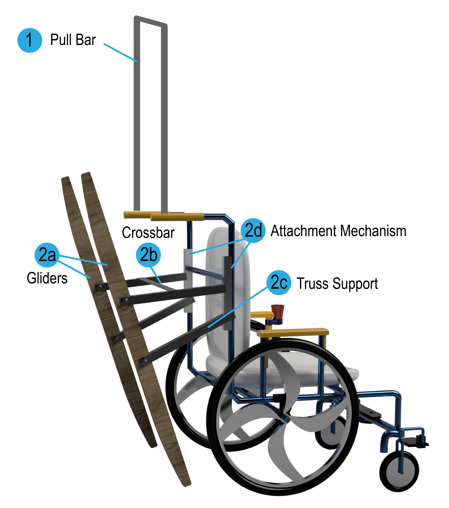
We are currently redesigning the attachment to increase its ease of manufacturability and reduce its assembly time.
This design is going to be sent to the Indian Institute of Technology – Delhi to be tested with
wheelchair users in the area.
×
AutoBrailler
I and a couple of friends participated in ATHack 2020, MIT's Assistive Tech. Hackathon. We created the AutoBrailler.
A addon attachment to the perkins brailler which takes text in and converts it to braille, effectively acting as a printer.
This project was a prize winner at the hackathon. A full description can be found here
×
Machined Flashlight
I made a flashlight with a knurled base using a mill and lathe with square and cylindrical aluminum stock.
This flashlight was made in an three day class which introduces students to machine shop tools
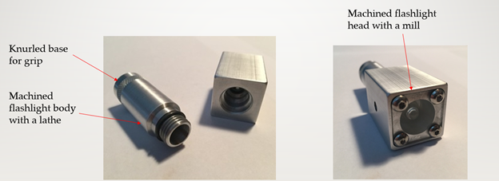
×
Remote Controlled Robot
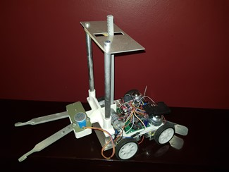
I designed, fabricated and programmed a robot to compete against other students’ robots on a game board to complete certain challenges.
The robot was programmed in Arduino and was controlled using a wireless PS2 controller. The robot also has an autonomous mode
where it follows a line and pulls a handle on the game board.
The functional mechanism is a gripper that is made from water jetted aluminum. The gripper is controlled using
a stepper motor and has a 3D printed housing.
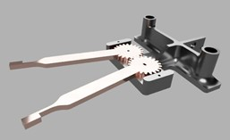
The gripper mechanism is connected to a rack and pinion system which allows it to move up and down.
The rack and pinion system has two 0.5” aluminum rods for support and to reduce binding.
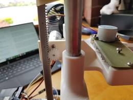
×
Automated Plant Watering System
I and another intern designed and fabricated an automated plant watering system that waters office plants
based on their soil moisture level and if its outside work hours for reduced distractions.
The device has custom designed electronics and 3D printed parts. Below is a report written on the whole
project. I mainly worked on the hardware and electronics design.
×
Lizard Inspired Robotic Leg - (2.74)
I designed and conducted tests on a robotic leg alongside three other students. We based the limb design to
mimic a Shovel-Snouted Lizard which can travel a distance of over 20 times its body length in a second.
The hardware consisted of a 2 DOF robotic limb that runs on a belt drive system which is attached to a gantry
that allows it to freely travel in one direction. When the limb digs into the sand, the robot is propelled forward.
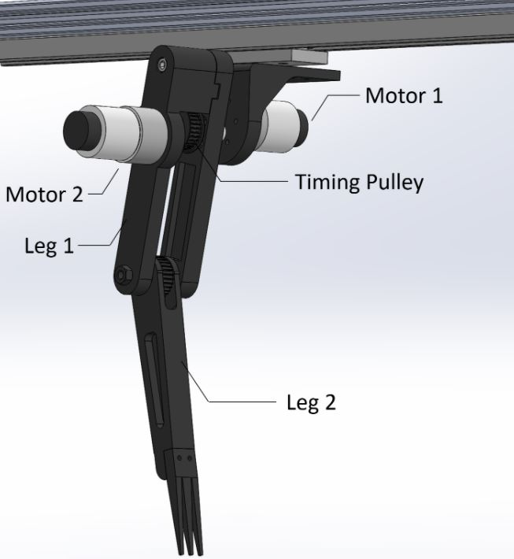
I built a forward Euler simulation model in MATLAB which models the robot kinematics along with its interactions
with the sand. I then ran an optimization algorithm to find the best leg angle and joint stiffness to get the highest
velocity when travelling through sand. Using this information, we tested our optimal results on our hardware
setup to see if it matched.
Extracurriculars
Activities I do outside of academic work
2017 - Present
Pi Lambda Phi Fraternity
Social Chair and Summer House Manager
2018 - Present
Electronics Class Lab Assistant
Lab assistant for 2.678, Electronics for Mechanical Engineers. I help students build and
debug a variety of circuits ranging from boost converters to H-bridges
2019 - Present
MIT Skydiving Club
Founding Member and Social Chair
2019 - 2020
Gordon Enginnering Leadership Program
I learnt effective leadership skills such as project management,
negotiation, conflict resolution, effective presentation and systems thinking from this
program
2018 - 2019
MIT Sport Pistol Team
Social Chair and invited to participate in National Collegiates